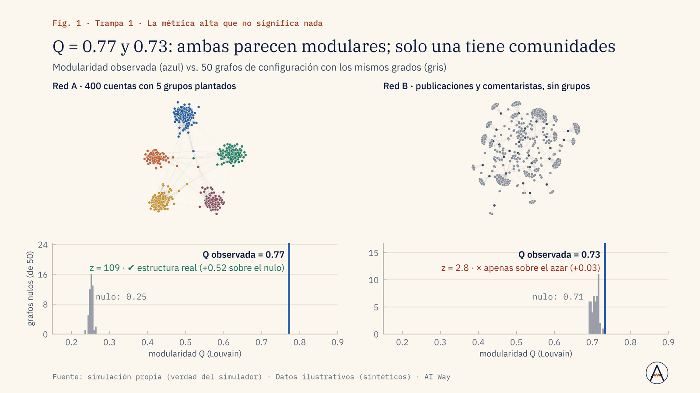
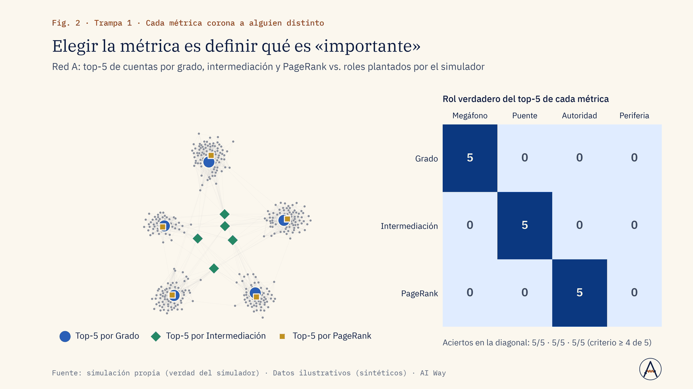
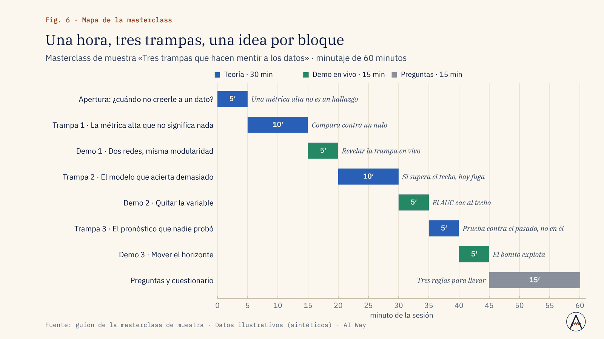

Marketing
¿Esas comunidades de audiencia existen o son ruido?
El equipo aprende a comparar la modularidad contra un modelo nulo antes de segmentar audiencias.
Segmentar campañas solo con comunidades que superan al nulo.
Servicio · Nº 10
Cursos, masterclasses y talleres para equipos de marketing, comunicación y datos, con datos construidos para enseñar y demos que funcionan sin internet.
01 · El problema
Los equipos aprenden ciencia de datos con datasets de juguete que no enseñan nada o con datos reales que parecen una bola de pelos.
Los cursos genéricos no conectan con su trabajo (escucha digital, métricas de campañas, IA generativa) y casi nunca enseñan cuándo una métrica engaña.
02 · Enfoque
03 · Resultados de la demo
Una masterclass de 60 minutos, «Tres trampas que hacen mentir a los datos», con su plataforma offline. Cada trampa sigue el ciclo pregunta → intuición equivocada → evidencia → regla práctica, y se detecta contra la verdad del simulador: modularidad contra un nulo, AUC contra el techo teórico y R² contra backtesting.
Un AUC de 0.95 es imposible: hay fuga
Fuente: simulación propia (verdad del simulador) · Datos ilustrativos (sintéticos) · AI Way
R² de 0.89 en el pasado, peor que el naive en el futuro
Fuente: simulación propia (verdad del simulador) · Datos ilustrativos (sintéticos) · AI Way



04 · Límites declarados
05 · Aplicaciones de negocio
Ejemplos de decisiones que este servicio ayuda a tomar; el alcance se define en el diagnóstico.
Marketing
El equipo aprende a comparar la modularidad contra un modelo nulo antes de segmentar audiencias.
Segmentar campañas solo con comunidades que superan al nulo.
Ventas e ingresos
Practica backtesting contra un naive estacional en lugar de confiar en el R² del pasado.
Aceptar o rechazar un pronóstico antes de llevarlo al presupuesto.
Riesgo de modelos
Aprende a detectar fuga de información: variables que solo existen después del evento.
Frenar un modelo con fuga antes de que llegue a producción.
Operación y costos
Notebooks, datasets y plataforma offline reutilizables para repetir los análisis de rutina.
Resolver en casa lo rutinario y contratar fuera solo lo especializado.
Comunicación y reputación
Cada trampa termina en una regla práctica para leer y comunicar cifras con su incertidumbre.
Publicar el hallazgo con su límite o esperar más evidencia.
Dirección y estrategia
Elegir la métrica es definir qué importa: el equipo fija baseline e incertidumbre antes de medir.
Fijar el criterio de éxito antes de financiar un proyecto de datos.
06 · Paquetes
Masterclass de 60 a 90 min sobre un tema (redes, escucha, IA generativa con criterio, validación) con presentación, demo y material.
Duración típica: 1 a 2 semanas de preparación + sesión
Taller de 4 a 6 sesiones aplicado a los datos o casos del cliente, con notebooks, plataforma offline y evaluación previa y posterior.
Duración típica: 3 a 4 semanas
Programa de 20+ sesiones (de fundamentos a ML e IA), material propiedad del cliente, formación de formadores y mentoría.
Duración típica: 8 a 12 semanas
Sin precios publicados: cada propuesta se cotiza tras un diagnóstico de alcance.
07 · Preguntas frecuentes
Hay versiones sin código (plataforma interactiva) y con código (notebooks).
Se puede, anonimizados; por defecto usamos datos sintéticos parecidos a los suyos.
Ambos; la plataforma offline evita depender de la red.
Según el paquete; el Enterprise incluye la propiedad del material.
08 · Descarga
Presentación de la demo (PDF, 1.7 MB). El caso completo: problema, método, resultados contra criterio y límites declarados.
Descargar PDFSiguiente paso
En una llamada de 30 minutos revisamos si se puede, cómo lo mediríamos y qué no te podemos prometer.
Otros servicios